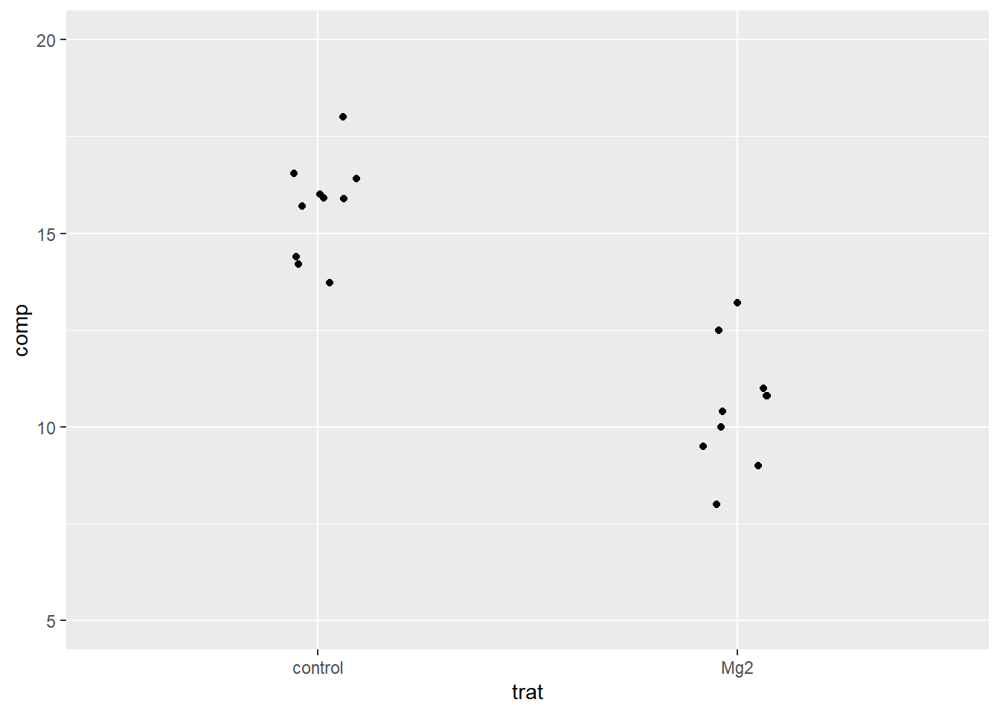
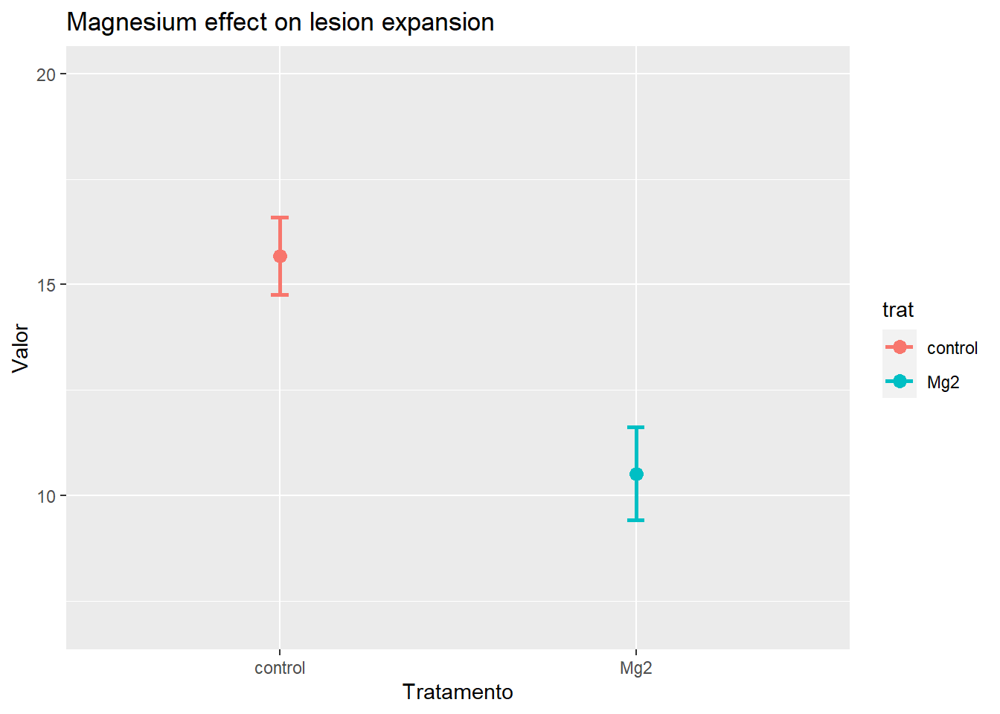
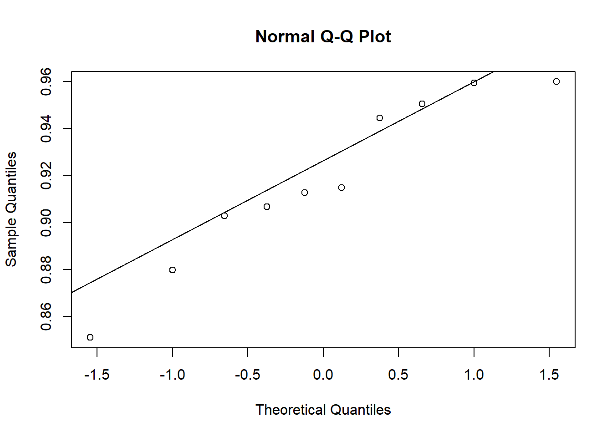
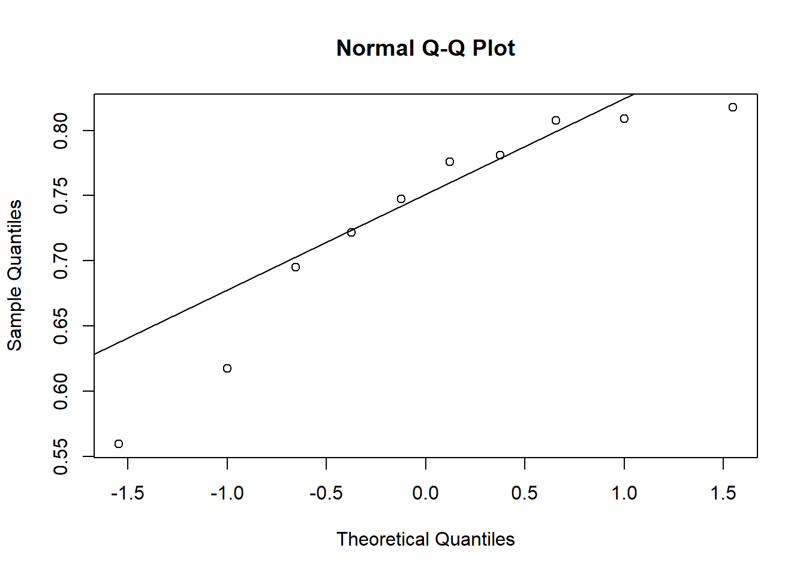
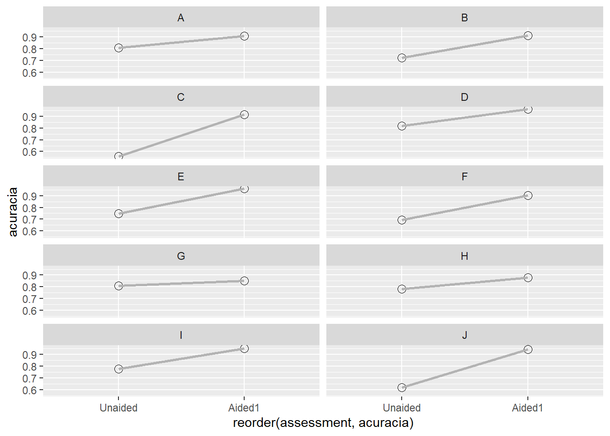

Nesta seção trataremos de formas de análisar dados em experimentos onde as causas da variação na resposta são controladas o máximo possível e o erro experimental minimizado. Veremos os tipos de análise de acordo com o número e tipo de variáveis independentes (níveis do fator) e também o número de tratamentos ou grupos a serem comparados. Iniciaremos primeiramente com os casos mais simples quanto ao número de grupos e iremos avançando conforme aumentamos a complexidade do experimento bem com algumas variações possíveis quanto ao número e tipo de variáveis resposta de interesse.
Dois tratamentos independentes
Um pesquisador conduziu um experimento com o objetivo de avaliar o efeito de um micronutriente, o magnésio (Mg), adicionado na solução do solo cultivado com plantas de arroz, no manejo de uma doença fúngica. O experimento foi conduzido em delineamento inteiramente casualizado com 10 repetições, sendo cada repetição um vaso de planta. Um dos tratamentos é o chamado controle, ou testemunha, sem o suplemento mineral. O segundo é aquele com o suplemento do Mg na dose de 2 mM. Em cada uma das repetições foi obtido um valor médio do comprimento de lesões em um determinado tempo após a inoculação.
Preparo pré-análise
library(magrittr) # para usar pipeslibrary(ggplot2) # para gráficos
Warning: package 'ggplot2' was built under R version 4.2.3
library(dplyr)
Warning: package 'dplyr' was built under R version 4.2.3
Attaching package: 'dplyr'
The following objects are masked from 'package:stats':
filter, lag
The following objects are masked from 'package:base':
intersect, setdiff, setequal, union
library(readxl)library(tidyr)
Attaching package: 'tidyr'
The following object is masked from 'package:magrittr':
extract
Dados no formato excel, então iremos utilizar o pacote readxl
Vamos obter estatísticas que descrevem o conjunto, seja a tendência central ou a dispersão dos dados. No caso, será a média, variância, desvio padrão, erro padrão e intervalo de confiança - esse último para inferência visual.
O conjunto está no formato largo, assim a variável resposta de interesse está apenas em uma coluna. Existem várias formas de separar em dois vetores os dados de resposta para cada tratamento. Uma delas é por meio da função spread do pacote tidyr, a qual coloca as respostas em duas colunas, uma para cada tratamento. Vamos criar o conjunto data_mg2.
Usando o conjunto original, vamos visualizar as respostas (tamanho da lesão) para cada tratamento, já que O ggplot2 requer os dados no formato largo.
# usando pipesdata_mg %>%ggplot(aes(trat, comp)) +geom_jitter(width =0.1, height =0) +ylim(5, 20) # ajusta o eixo y para melhor visualização

Homocedasticidade
No caso de dois grupos, a função que pode ser usada é a var.test do R. Vamos usar o formato largo e chamar os dois vetores do conjunto. Verifique o P-valor na saída da análise.
attach(data_mg2) # vamos facilitar o uso dos vetoresvar.test(Mg2, control)
F test to compare two variances
data: Mg2 and control
F = 1.4781, num df = 9, denom df = 9, p-value = 0.5698
alternative hypothesis: true ratio of variances is not equal to 1
95 percent confidence interval:
0.3671417 5.9508644
sample estimates:
ratio of variances
1.478111
Normalidade
A normalidade pode ser testada por meio de procedimentos visuais e testes específicos.
shapiro.test(Mg2)
Shapiro-Wilk normality test
data: Mg2
W = 0.97269, p-value = 0.9146
shapiro.test(control)
Shapiro-Wilk normality test
data: control
W = 0.93886, p-value = 0.5404
Análise visual da premissa de normalidade.
qqnorm(Mg2)qqline(Mg2)
qqnorm(control)qqline(control)
magnesio3 <- data_mg %>%group_by(trat) %>%summarize(mu =mean(comp),sd =sd(comp),n =length(comp),se = sd /sqrt(n),ciu = mu + (qt(0.025, df = n -1) * se),cil = mu - (qt(0.025, df = n -1) * se) )
Intervalo de confiança
magnesio3 %>%ggplot(aes(trat, mu, color = trat)) +geom_point(size =3) +ylim(7,20)+geom_errorbar(aes(min = cil, max = ciu), width =0.05, size =1) +labs(x ="Tratamento", y ="Valor", title ="Magnesium effect on lesion expansion")
Warning: Using `size` aesthetic for lines was deprecated in ggplot2 3.4.0.
ℹ Please use `linewidth` instead.

Teste de hipótese
t.test(Mg2, control, paired = F)
Welch Two Sample t-test
data: Mg2 and control
t = -8.1549, df = 17.354, p-value = 2.423e-07
alternative hypothesis: true difference in means is not equal to 0
95 percent confidence interval:
-6.490393 -3.825607
sample estimates:
mean of x mean of y
10.520 15.678
Alternativas
Se as premissas de normalidade não fossem atendidas, qual o teste que poderia ser usado? Nesse caso de dois grupos há duas possibilidades, uma é usar um teste não paramétrico ou um teste baseado em reamostragem (bootstrapping) dos dados, os quais independem do modelo de distribuição.
Usando os mesmos dados podemos notar que o resultado é idêntico porém com P-valores diferentes.
Dois tratamentos dependentes
Um experimento foi conduzido para avaliar o efeito do uso da escala na acurácia e precisão de avaliações visuais de severidade por avaliadores. A hipótese a ser testada foi que avaliações utilizando uma escala digramática como auxílio são mais acuradas do que sem o uso do auxílio. Dez avaliadores foram escolhidos aleatoriamente e fizeram duas avaliações cada. Cinco variáveis que compõe a medida da concordância das estimativas foram obtidas. Uma vez que as medidas foram repetidas no tempo para cada avaliador, as amostras são do tipo dependentes.
## homocedasticidade dois gruposattach(escala3)var.test(Aided1, Unaided)
F test to compare two variances
data: Aided1 and Unaided
F = 0.17041, num df = 9, denom df = 9, p-value = 0.01461
alternative hypothesis: true ratio of variances is not equal to 1
95 percent confidence interval:
0.04232677 0.68605885
sample estimates:
ratio of variances
0.1704073
## normalidadeshapiro.test(Aided1)$p.value
[1] 0.4260888
shapiro.test(Unaided)$p.value
[1] 0.1131276
qqnorm(Aided1)qqline(Aided1)

qqnorm(Unaided)qqline(Unaided)

Análise inferencial
escala4 <-summarize(group_by(escala2, assessment),mu =mean(acuracia),sd =sd(acuracia),n =length(acuracia),se = sd /sqrt(n),ciu = mu + (qt(0.025, df = n -1) * se),cil = mu - (qt(0.025, df = n -1) * se))
ggplot(escala2, aes(reorder(assessment, acuracia), acuracia, group = rater)) +geom_point(stat ="identity", size =3, shape =1) +geom_line(size =1, color ="gray70") +facet_wrap(~rater, nrow =5)

Teste t paramétrico
Note que as amostras são pareadas - mesmo avaliador em dois tempos, portanto há dependência.
## teste t para amostras pareadast_escala <-t.test(escala3$Aided1, escala3$Unaided,paired =TRUE,var.equal = F)t_escala
Paired t-test
data: escala3$Aided1 and escala3$Unaided
t = 5.9364, df = 9, p-value = 0.000219
alternative hypothesis: true mean difference is not equal to 0
95 percent confidence interval:
0.1144707 0.2554241
sample estimates:
mean difference
0.1849474
Wilcoxon signed rank exact test
data: escala3$Aided1 and escala3$Unaided
V = 55, p-value = 0.001953
alternative hypothesis: true location shift is not equal to 0